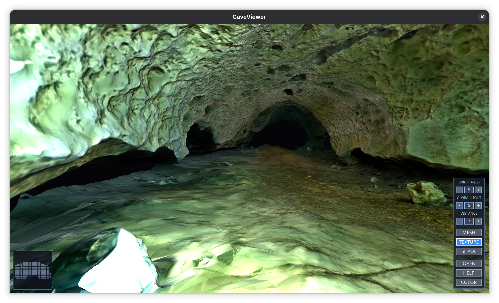
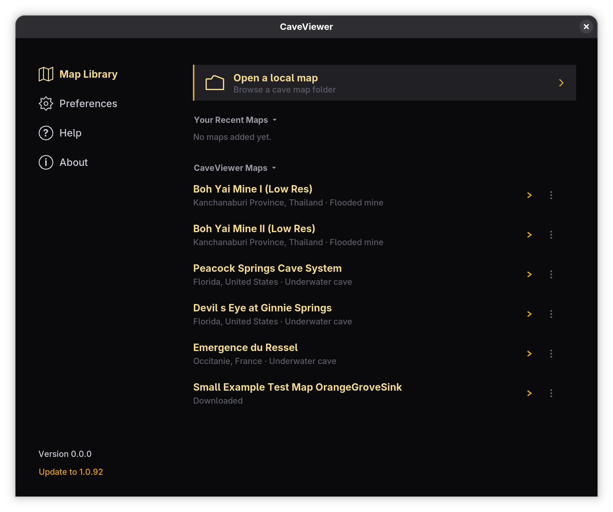
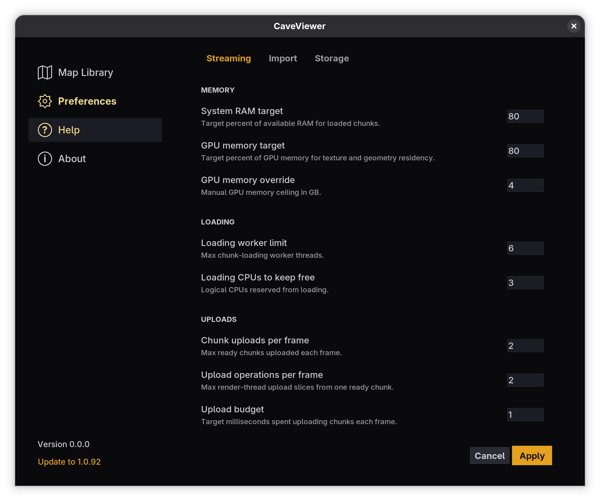

CaveViewer features and advantages
Render What Others Can’t
Huge cave scans often exceed the practical limits of a conventional viewer, leaving people waiting for a model to load or forced to simplify it. CaveViewer builds a reusable spatial cache and loads nearby chunks as you move, keeping a large map responsive without holding the whole model in memory at once. It lets teams inspect a survey at its original scale on lighter laptops as well as powerful workstations.
- Explore larger surveys. Open detailed maps that would otherwise be difficult to load all at once.
- Stay in motion. CaveViewer brings nearby parts of the map into view as you fly, keeping exploration responsive.
- Return faster. Once a map has been prepared, CaveViewer keeps its local working data for quicker future openings.

Explore the Map Library
Getting started with unfamiliar mapping software is difficult when you do not have a prepared data set. Map Library offers a catalog of standard maps that can be downloaded on demand, reopened locally, and used to check that CaveViewer is ready. Its bundled or cached catalog keeps a known selection available when a network connection is unavailable.
- Start without your own data. Try a ready-to-use cave map as soon as you open CaveViewer.
- Download only what you need. Choose the maps you want instead of installing a large collection you may never use.
- Keep maps close at hand. Downloaded maps and the most recently known catalog remain useful when you have limited connectivity.

Record & Share Dives
A fly-through is hard to explain once the map window is closed. Capture turns what you see into a video and lets you save the route you take through the map. Everything stays in local files, ready to revisit or share through the tools your team already uses.
- Record a dive. Save a video fly-through for a quick review or a clear visual explanation.
- Trace a route. Save the path you take so someone else can replay that same route on the same map.
- Slice a cave. Mark two points to pull out a smaller, standalone part of a large map—useful when you want to focus on one passage or share only the relevant area.

Advantage
Keep more cave within reach.
Large cave maps should not become an all-or-nothing hardware test. CaveViewer prepares a reusable local cache and works to a conservative memory budget when a map or computer needs it, instead of asking a desktop to hold every chunk and texture at once. The map remains useful, while the choices that matter stay available in Preferences.
- Start with a safer fit. CaveViewer uses available system and graphics memory to set a working budget. If textures exceed the graphics budget, it can use a smaller texture size before uploading them; the cave remains explorable, though fine surface detail may look softer.
- Shape a cache for the source map. Import chunk size and Max upload group size let you prepare a new cache with the map’s density and your hardware in mind.
- Leave the rest of the desktop usable. Cache-building worker limit lets you decide how much background work an import should take on.

Stay with the cave, not the wait.
As you explore, CaveViewer keeps a useful working set of nearby chunks ready rather than treating a full cave as an all-at-once load. That approach keeps the trade-offs understandable: use the resources your computer has, tune them when a particular map calls for it, and keep the result in files you control.
- Give viewing a clear budget. System RAM target and GPU memory target balance how much of a map stays ready against the memory available to the rest of the system.
- Keep background work in its place. Loading worker limit and Loading CPUs to keep free let you preserve room for the rest of your desktop while the map streams in.
- Carry the useful part. Save a standalone slice of a precompiled map for a restriction, landmark, or passage. It carries the geometry and textures it needs, without reopening the full parent cave.
- Keep it in your hands. CaveViewer and its maps are free. No ads, accounts, subscriptions, gimmicks, or trackers. They work on recent Windows, macOS, Ubuntu, and Fedora systems.
